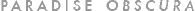
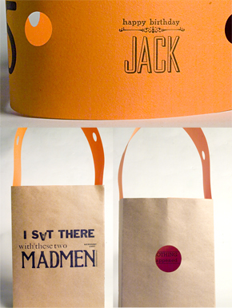

|  |
City Lights Bookstore presents xtine's hand-made response to the 50th anniversary of the publication of Jack Kerouac's On The Road. Paradise Obscura is a hybrid visual-literary arts event, happening March 12, 2007 from 2:30 - midnight. The first 50 shoppers will receive a free hand-made, letter press printed shopping bag.
Paradise Obscura is a visual manifestation of the voyeuristic theme developed in Jack Kerouac's On the Road. By usurping the visual identity of a shopping bag, Paradise Obscura is an interventionist project that will take place in (North Beach) San Francisco, at the intersection of Jack Kerouac's On The Road, City Lights Bookstore (owned by Beat poet/writer Lawrence Ferlinghetti) and the interpersonal acts of voyeurism as shoppers eye each other's bags in the city. The elements of Kerouac's seminal text are returned to the city where it was born, but within a new context: the shopping bag. One of Sal Paradise's thoughts (Kerouac's protagonist and other voice) while traveling in San Francisco is manipulated by the construction of the shopping bag. On the outside of the bag, half of the message, "I sat there with these two madmen" places words in the hands of the consumer, as if labeled by Kerouac, himself. On the inside of the bag, the message incriminates the consumer, "Nothing happened." This text could be translated to, "I bought something new...nothing happened;" and act as a challenge to beliefs and attitudes common to consumer culture.
Following the tradition of the Situationists International, a spectacle is made of the viewing public by the transformation of the meaning of everyday materials. The bags are used in the act of what Guy Debord would call a detournment. This interventionist project is most effective outside of the gallery walls, as the bags are distributed to unassuming consumers--literally translating the unknowing consumer into an art collector. The bags benefit from the traditionally passive role of the consumer while luring onlookers to a text that both celebrates Kerouac's work and indicts anyone seated within close proximity. It is the familiarity with the visual language of the shopping bags that enables the consumption of the subversive message.